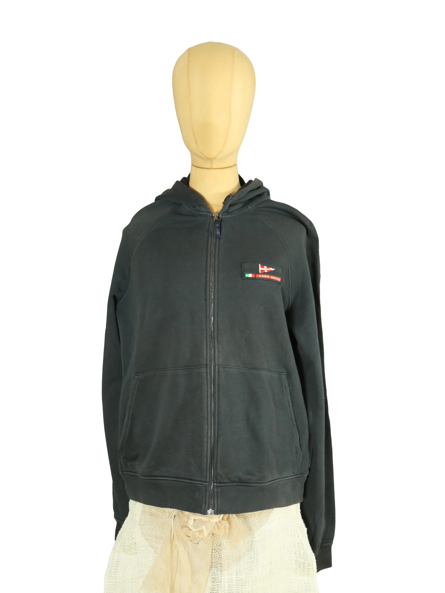

1 / 14Aus dem kuratierten Archiv von Disorder119. Diese Sweatjacke aus der Prada Linie Luna Rossa verbindet funktionale Sportästhetik mit klarer, reduzierter Formensprache. Der tiefschwarze Farbton wirkt präzise und zurückhaltend, während das charakteristische Luna Rossa Patch auf der Brust mit italienischer Flagge und Segelmotiv einen markanten, aber kontrollierten Akzent setzt. Der Schnitt ist klassisch gehalten mit Raglanärmeln, durchgehendem Reißverschluss und zwei frontalen Eingrifftaschen. Die Kapuze liegt flach am Rücken und unterstreicht die sportliche, klare Silhouette. Die mittelschwere Sweatqualität zeigt eine weiche Innenseite und eine stabile Außenstruktur. Eine vielseitige Jacke mit technischer Anmutung und zeitloser Präsenz. Details: Marke Prada Luna Rossa Farbe Schwarz Größe XL Passform Regulär Verschluss Reißverschluss Material Baumwollmischung Herstellungsland Nicht angegeben Fotografie & Passform: Das Kleidungsstück wurde auf unserer Standard-Schneiderpuppe fotografiert, die wir zur konsistenten Darstellung aller Kleidungsstücke verwenden. Maße der Schneiderpuppe: Brustumfang 89 cm Taillenumfang 66 cm Hüftumfang 89 cm Schulterbreite 38 cm Diese Maße dienen ausschließlich der visuellen Einordnung und werden nicht als Artikelmaße bezeichnet. Zustand: Gebraucht. Leichte Tragespuren, insgesamt gepflegter Gesamteindruck. Rechtliche Hinweise: Verkauf als gebrauchtes Kleidungsstück. Die Beschreibung erfolgt nach bestem Wissen und Gewissen. Farbnuancen und Oberflächenwirkungen können aufgrund von Lichtverhältnissen bei der Fotografie sowie unterschiedlicher Bildschirmdarstellungen leicht vom Original abweichen. Disorder119 steht für sorgfältig kuratierte Designerstücke mit Fokus auf Authentizität, Qualität und zeitlose Relevanz.
Disorder119 · Kuratiertes Archiv für Designer-, Vintage- und Contemporary-Mode. Jedes Stück wird einzeln ausgewählt, fotografiert und beschrieben.